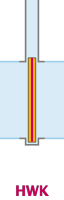
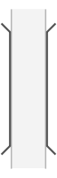

I01
C01
C02
C03
C04
C05
C06
C07
C08
C09
C10
C11
C12
C13
C14
D01
D02D03
D04
D05
D06
D07
D08
D09
D10
D11
D12
D13
D14
D15
D16
I02
I03
D17
D18
D19
D19
D20
D21
D22
D23D24D25D26
D27
D28
D29
D30
D31
I04
I05I06
I07
Een kolkconfiguratiestring voldoet aan de volgende syntax
"(","N"|"O"|"Z"|"W",("ABC"|"CBA")?,")",symbol+waarbij voor symbol een tekencombinatie gebruikt wordt uit de tabel, zie Symbolen
Beschrijvend:
( [Ingang-volgens-netwerk-richting] [Naamvolgorde] ) ConfiguratiestringBijvoorbeeld:
( W ABC )<.:>. .<.>. .<.>: De configuratiestring bestaat uit drie delen: een deel tussen haakjes aan het begin, een reeks symbolen en (eventueel) afsluitend vrije tekst tussen haakjes. De symbolen staan voor kolk-elementen, in de JavaScript-code aangeduid als elements
In het eerste gedeelte, tussen haakjes, staat achtereenvolgens:
één letter die de windstreek aanduid waar de ingang van de kolk ligt volgens de netwerkrichting. Zie 'Windstreek'
De lettervolgorde 'ABC' of 'CBA' die de lexicografische nummering van de deuren vastlegt. Als hier 'ABC' staat of niets is vermeld, krijgt de meest linker deur de naam 'A', de volgende 'B', etcetera. Alleen als hier 'CBA' staat, is deze volgorde omgekeerd. Deze namen worden afgebeeld in het diagram en gebruikt om de schutruimtes mee aan te duiden.
Spaties in de het eerste gedeelte tussen de haakjes worden genegeerd en kunnen naar believen worden toegevoegd om de leesbaarheid te verhogen.
De configuratiestring is een tekstuele, maar engiszins grafische, representatie van de sluis.
De kolk wordt altijd horizontaal getekend en altijd van west naar oost of van noord naar zuid. Dit geldt voor zowel de configuratiestring als het uiteindelijke diagram. De linkerkant van het diagram komt dus altijd overeen met ofwel de westzijde van de kolk ofwel de noordzijde van de kolk. De linkerkant wordt in het uiteindelijk diagram altijd voorzien van de letter "N" of "W". Evenzo wordt de rechterzijde altijd voorzien van de letter "Z" of "O".
De windstreek geeft aan, aan welke zijde van de kolk zich de ingang bevindt volgens de netwerkrichting zoals RWS die hanteert. De enige invloed die dit heeft op het uiteindelijke diagram is een pijltje in de tekening. Het is echter van belang voor het toekennen van id's aan de sluishoofden, aangezien deze altijd oplopend in de netwerk-richting genummerd worden. (Dit staat dus los van de naamgeving!)
De windstreek-letter geeft ook aan of de kolk noord→zuid of west→oost getekend word. Zowel de letter "W" als de letter "O" zorgen er dus voor dat de kolk west→oost getekend word! En, zowel de letter "N" als de letter "Z" zorgen ervoor dat de kolk noord→zuid getekend word.
De serie symbolen tekenen samen de sluisconfiguratie op een een wijze die zowel voor computers als mensen begrijpelijk is. De symbolen dienen gekozen te worden uit de eerste kolom van de volgende tabel
| Symbool | (Bestands)naam | Tooltip | Afbeelding | Beschrijving |
|---|---|---|---|---|
I01 |
stopstreep | stopstreep | |
Stopstrepen horen altijd bij 1 bepaalde deur |
C01 |
gladde-kolk | kolkdeel | |
Getekend op 'sluisdeur-/sluishoofdbreedte'. Voor een langere Sluiskolk of langer Sluiskolkdeel wordt dit symbool naar smaak herhaald. Deze wordt in principe alleen toegepast in zgn. "gladde kolken" (even breed als de Sluishoofden). |
C02 |
kolk-verbreed | Verbreed Kolkdeel | |
Een kolkdeel dat breder is dan de 'deur-/hoofdbreedte' van de Sluiskolk. Voor een langere Sluiskolk of Sluiskolkdeel wordt dit symbool naar behoefte herhaald. Een Verbreed Kolkdeel (C02) wordt altijd vooraf gegaan door een Kolkovergang (C04, C06, C08, C10 of C11) of door een ander Verbreed Kolkdeel. |
C03 |
kamerkolk-kop-b | Kolkovergang, breed-naar-smal | |
Adaptor voor een kolkversmalling. Dit kolkdeel kan alleen volgen op een Verbreed Kolkdeel (C02). |
C04 |
kamerkolk-kop-d | Kolkovergang, smal-naar-breed | |
Adaptor voor een kolkverbreding. Na dit kolkdeel moet een Verbreed Kolkdeel (G02) volgen. |
C05 |
kamerkolk-kop-p | Kolkovergang, breed-naar-smal | |
Adaptor voor een kolkversmalling. Dit kolkdeel kan alleen volgen op een Verbreed Kolkdeel (C02). |
C06 |
kamerkolk-kop-q | Kolkovergang, smal-naar-breed | |
Adaptor voor een kolkverbreding. Na dit kolkdeel moet een Verbreed Kolkdeel (G02) volgen. |
C07 |
kamerkolk-kop-6-rond | Kolkovergang, breed-naar-smal | |
Adaptor voor een kolkversmalling. Dit kolkdeel kan alleen volgen op een Verbreed Kolkdeel (C02). |
C08 |
kamerkolk-kop-j-rond | Kolkovergang, smal-naar-breed | |
Adaptor voor een kolkverbreding. Na dit kolkdeel moet een Verbreed Kolkdeel (G02) volgen. |
C09 |
kamerkolk-kop-r-rond | Kolkovergang, breed-naar-smal | |
Adaptor voor een kolkversmalling. Dit kolkdeel kan alleen volgen op een Verbreed Kolkdeel (C02). |
C10 |
kamerkolk-kop-9-rond | Kolkovergang, smal-naar-breed | |
Adaptor voor een kolkverbreding. Na dit kolkdeel moet een Verbreed Kolkdeel volgen. |
C11 |
binnenfrontkolk-kop-links | Kolkovergang, smal-naar-breed | |
Adaptor voor een kolkverbreding. Na dit kolkdeel moet een Verbreed Kolkdeel volgen. |
C12 |
binnenfrontkolk-kop-rechts | Kolkovergang, breed-naar-smal | |
Adaptor voor een kolkversmalling. Dit kolkdeel kan alleen volgen op een Verbreed Kolkdeel (C02). |
C13 |
komkolk-kop-links | Kolkovergang, smal-naar-breed | |
Adaptor voor een kolkverbreding. Na dit kolkdeel moet een Verbreed Kolkdeel volgen. |
C14 |
komkolk-kop-rechts | Kolkovergang, breed-naar-smal | |
Adaptor voor een kolkversmalling. Dit kolkdeel kan alleen volgen op een Verbreed Kolkdeel (C02). |
D01 |
puntdeur-links | puntdeur links | |
|
D02 |
puntdeur-rechts | puntdeur rechts | ||
D03 |
puntdeur-pin-links | dubbelkerende enkelvoudige puntdeur met pin, links | |
|
D04 |
puntdeur-pin-rechts | dubbelkerende enkelvoudige puntdeur met pin, rechts | |
|
D05 |
puntdeur-dubbelk-links | dubbelkerende enkelvoudige puntdeur, links | |
|
D06 |
puntdeur-dubbelk-rechts | dubbelkerende enkelvoudige puntdeur, rechts | |
|
D07 |
draaideur-lb | enkele draaideur, links, scharnier boven, aanslag onder | |
|
D08 |
draaideur-lo | enkele draaideur, links, scharnier onder, aanslag boven | |
|
D09 |
draaideur-rb | enkele draaideur, rechts, scharnier boven, aanslag onder | |
|
D10 |
draaideur-ro | enkele draaideur, rechts, scharnier onder, aanslag boven | |
|
D11 |
hefdeur | hefdeur | |
|
D12 |
hangroldeur | hangroldeur | |
|
D13 |
roldeur-boven | roldeur boven | |
|
D14 |
roldeur-onder | roldeur, onder | |
|
D15 |
waaierdeur-links | waaierdeur, links | |
|
D16 |
waaierdeur-rechts | waaierdeur, rechts | |
|
I02 |
schot | Deur of schot, alleen bij hoogwater | |
|
I03 |
breed-schot | Deur of schot over brede kolk, alleen bij hoogwater | |
|
D17 |
puntdeur-links-hwk | puntdeur, links, hoogwaterkerig | |
|
D18 |
puntdeur-rechts-hwk | puntdeur, rechts, hoogwaterkering | |
|
D19 |
puntdeur-pin-links-hwk | dubbelkerende enkelvoudige puntdeur met pin, links, hoogwaterkering | |
|
D19 |
puntdeur-pin-rechts-hwk | dubbelkerende enkelvoudige puntdeur met pin, rechts, hoogwaterkering | |
|
D20 |
puntdeur-dubbelk-links-hwk | dubbelkerende enkelvoudige puntdeur, links, hoogwaterkering | |
|
D21 |
puntdeur-dubbelk-rechts-hwk | dubbelkerende enkelvoudige puntdeur, rechts, hoogwaterkering | |
|
D22 |
hefdeur-hwk | hefdeur | |
|
D23 |
roldeur-boven-hwk | roldeur, hoogwaterkering, boven |  | |
D24 |
roldeur-onder-hwk | roldeur, hoogwaterkering, onder | ||
D25 |
hangroldeur-hwk | hangroldeur, hoogwaterkering | ||
D26 |
waaierdeur-links-hwk | waaierdeur, hoogwaterkering, links | |
|
D27 |
waaierdeur-rechts-hwk | waaierdeur, hoogwaterkering, rechts | |
|
D28 |
draaideur-lb-hwk | enkele draaideur, links, scharnier boven, aanslag onder, hoogwaterkering | |
|
D29 |
draaideur-lo-hwk | enkele draaideur, links, scharnier onder, aanslag boven, hoogwaterkering | |
|
D30 |
draaideur-rb-hwk | enkele draaideur, rechts, scharnier boven, aanslag onder, hoogwaterkering | |
|
D31 |
draaideur-ro-hwk | enkele draaideur, rechts, scharnier onder, aanslag boven, hoogwaterkering | |
|
I04 |
vaarweg | Vaarweg, geen kolk, alleen voor brug buiten kolk | |
|
I05 |
brug-vast | Doorvaartopening, vast |  | |
I06 |
brug-beweegbaar | Doorvaartopening, beweegbaar | |
|
I07 |
weg-over-hoofd | Wegdek over sluishoofd | |